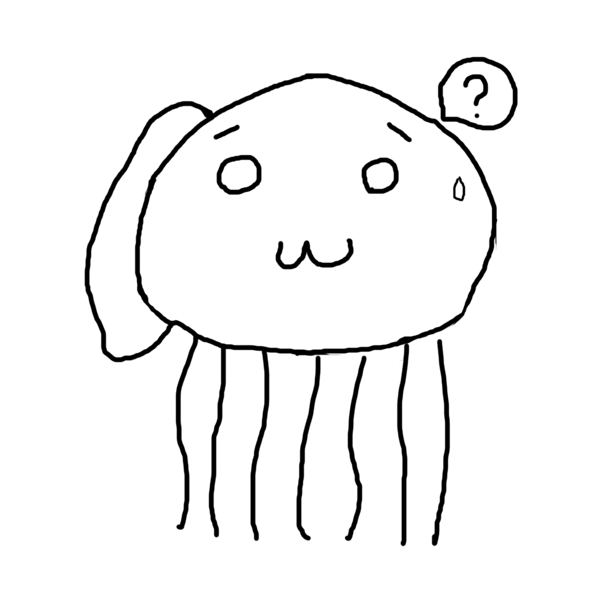

手悟群 翔
(Label Founder, Singer Song Writer, Track Maker)
日本国石川県金沢市 出生/出身/在住
中学二年秋辺りから、GarageBandのループ音源並べ替えによる作曲に触れた事で"音を紡ぐ事の愉しみ"を覚え、
国立高専入学後より打ち込みによる本格的な音楽活動を開始する。
高専在学時にゲームを構築するサークルに二代目作曲担当として在籍し、ある程度の経験を積んで現在に至る。
- 個人の公式サイト: 金澤常花製作所/FPOTFK
- SoundCloud: shotagomura-cpx
- Twitter: @sho_tagomura